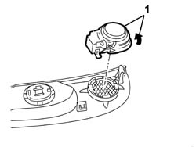

5570T92 FRONT TWEETER - R R
- Path
- Procedures > 55 ELECTRICAL EQUIPMENT > 5570 ACCESSORIES > 5570T CAR RADIO AND CAR TELEPHONE > 5570T92 FRONT TWEETER - R R
- Kind
- repair procedure (removal / refitting; the operation number is the code)
- Applies to
- all engines; all production periods
- Interactive page
- https://sloeber94.github.io/elrnDB-aGt/en/#/125001718
Applies to: all engines; all production periods
 Removing
Removing
 Refitting
RefittingWork carefully.
Op. 7005C44 INTERIOR HANDLE PANEL - R R
1. Rotate the tweeter in an anti-clockwise direction and remove it.

Applies to: all engines; all production periods
Refitting
RemovingCheck that the tweeter is not damaged.
Fit the tweeter in place.
Op. 7005C44 INTERIOR HANDLE PANEL - R R
Check the operation of the tweeter.